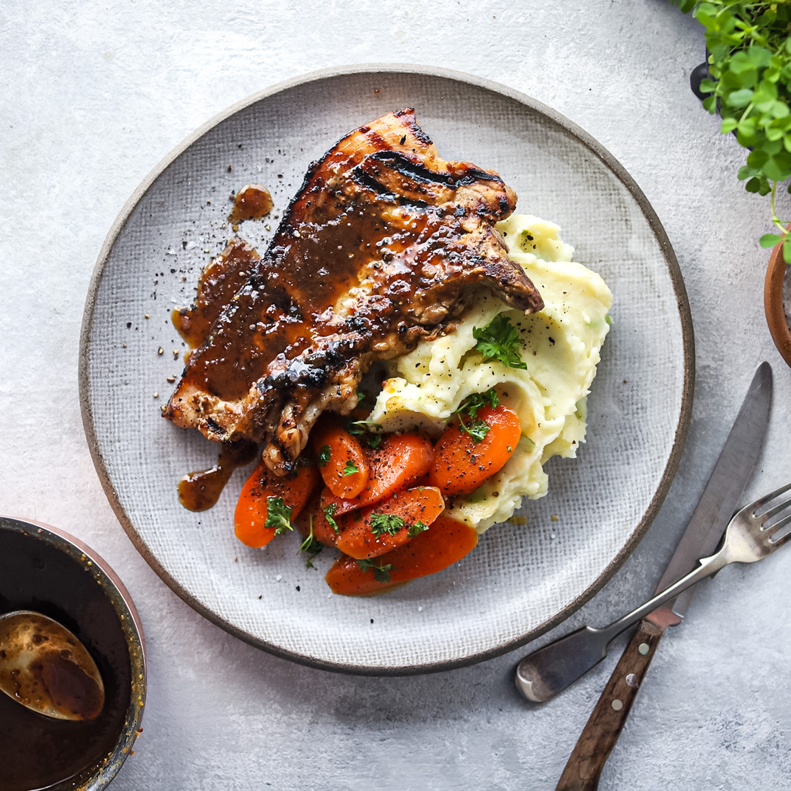

Ngoni's Pork Chops and Mash

These pork chops are served alongside some buttery herbed carrots and classic champ mash.
Inspired By:Todd & Diane
Ingredients
- Salt
- Butter
- Milk
- Olive Oil
- Robertsons' Steak and Chops Spice
- Potatoes
- Carrots
- Green Beans
Recipe Instructions
- Chop the potatoes, carrots, and green beans.
- Boil the potatoes in salt water.
- Season the pork chops with the Robertsons' spice and salt (Drizzle with olive oil).
- Place the pork chops on an oven pan and roast (flip to ensure even browning on both sides).
- Pour away the salt water once the potatoes are boiled.
- Add butter and milk to the soft potatoes and mash until you have a smooth consistency.
- Add carrots and green beans to the oven pan.
- Once the carrots are slightly charred on one side, turn off the oven.
- Serve!
Return To Top
Return To Home